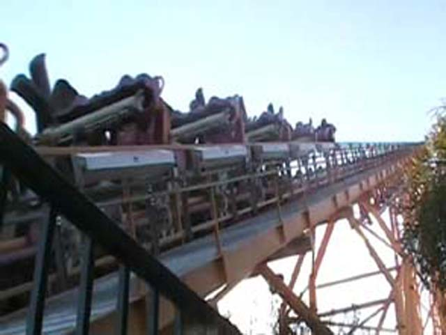
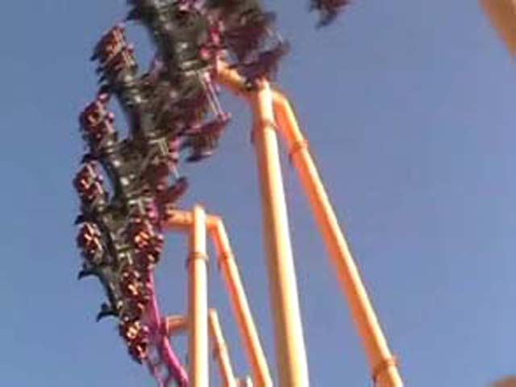
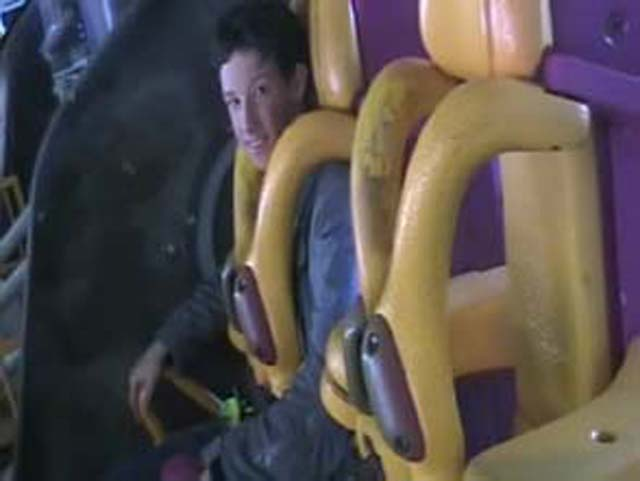

Today is the day of Westcoaster Bash IV. It's where people from Themeparkreview and Rideword go to Magic Mtn 2 hours before the park opens and get ERT on certain rides. This year, we got ERT on X, Viper and Tatsu. Since Cody was here today, We'd have nothing but two hours of X!

Its the lifthill of doom! It will prevent you from having conversations with your friends before you are plunged into a ride of disorenation, confusion, and
drunkeness.

GRRRR! WHY DOESN'T X HAVE AN EGG TURN! ITS JUST ANOTHER LOUSY HORSESHOE!!!! GRRRR!!!!
This is a random place to have a piece of random Goliath stright random track randomly sitting.

I love my precious X! Ever since Pysclone closed, I thought I would never break from my depression, but thats changed thanks to X
I snuck away from Cody and decided to take a ride on Viper during ERT.